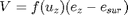
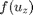
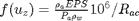

Contents
function [vaporMassEvap,vaporMassSub,latentHeat]=latentHeatFrmSnow(dt,airDens,press,VPD,eActAir,RaC,TSnow,ice,water)
Algorithm Descroiption
the evaporation and sublimation rate depend solely on the vapor deficit and are the same. Evaporation is easier and thus prior to sublimation. If there is surface/intercepted liquid water, the liquid water must be exhausted first before sublimation starts Neither processes can exceed the current holding.(VIC fails to note that)
output parameters
vaporMassEvap (-mm/s): evaporated water depth vaporMassSub (-mm/s): sublimated depth of snow water equivalence latentHeat -W/(m^2)/s: latent heat is negative if evaporation or sublimation happens
input variables
dt,airDens,press,VPD,eActAir,RaC,TSnow,ice,water
global EPS m2mm RHO_W JOULESPCAL GRAMSPKG Ls0 Ls1 Lv0 Lv1
esSnow = saturatedVaporPressure(TSnow);
Error using latentHeatFrmSnow (line 15) Not enough input arguments.
sublimation + evaporation rate in(m)

where
V(m/s)is the transferred vapor amount(negative value means the flux is from the snow surface to the air)
 is the wind function mm/kPa/s

nCells=length(airDens); vaporMassFlux= airDens.*(EPS./press).*(eActAir - esSnow)./RaC/RHO_W; %(A4) % evaporation will not happen when the vapor in the air is saturated 8 % However, condensation can happen,i.e.,(vaporMassFlux>0) vaporMassFlux(vaporMassFlux<0 & VPD==0)=0; %CREST corrected, vapor flux of sublimation/evaporation cannot exceed the intercepted snow/rain isconden=vaporMassFlux>0; vaporMassEvap=zeros(nCells,1); vaporMassSub=zeros(nCells,1); % sublimation+evaporation vaporMassEvap(~isconden)=max(vaporMassFlux(~isconden),-water(~isconden)/(dt*m2mm)); vaporMassSub(~isconden)=max(vaporMassFlux(~isconden)-vaporMassEvap(~isconden),-ice(~isconden)/(dt*m2mm)); % condensation of frost vaporMassSub(isconden)=vaporMassFlux(isconden); % vaporMassFlux=min(vaporMassFlux,ice/m2mm); Ls = (Ls0 + Ls1 * TSnow) * JOULESPCAL * GRAMSPKG; Lv = (Lv0 + Lv1 * TSnow); % latent heat for sublimation (J/s/m^2) latentHeat = Ls.* vaporMassSub * RHO_W+Lv.* vaporMassEvap * RHO_W;% VIC has not considered the insufficiency of intercepted snow vaporMassEvap=vaporMassEvap*m2mm; vaporMassSub=vaporMassSub*m2mm; % latentHeat(TSnow>0)= Lv(TSnow>0).*vaporMassFlux(TSnow>0); % Penman Equation should be used if latent heat is to be computed
end